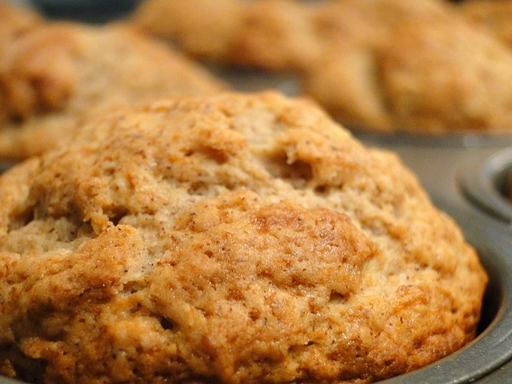

Home
Small-Batch Banana Muffins

(Image sourced from Pixabay)
Description
This recipe makes 5 - 6 fairly large banana muffins, depending on how big your baking tin is. I personally love this recipe because of how easy it is to follow, and it has very simple ingredients. While the recipe may be basic, the muffins themselves are not!
Ingredients
- 1/2 cup sugar
- 2 overripe bananas
- 6 tablespoons salted butter, melted
- 1 large egg
- 1/2 teaspoon vanilla extract
- 1 cup all purpose flour
- 1 teaspoon baking soda
- 1/4 teaspoon salt
Steps
- Preheat the oven to 350 degrees F.
- Spray or lightly butter the muffin tin.
- In a large bowl, whip together the sugar and one of the bananas until well combined.
- Add the cooled, melted butter, the egg, and one of the bananas together until well blended.
- Mix in the flour, baking soda, and salt until just incorporated.
- On the side, peel and mash the remaining banana Then, fold into the batter.
- Scoop the batter into the muffin tins and fill them 3/4 of the way.
- Bake until a toothpick stuck in the muffins comes out clean, approximately 20-25 minutes.